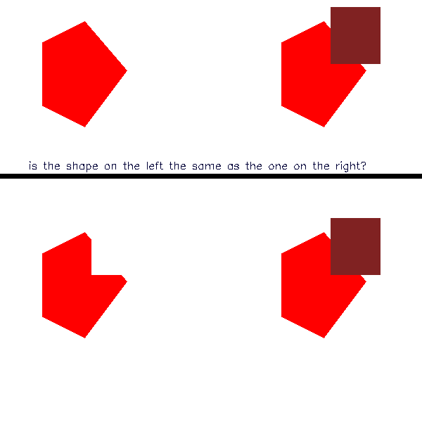
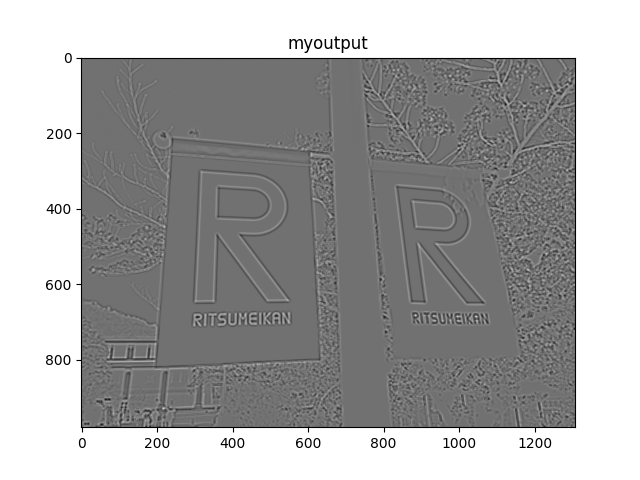
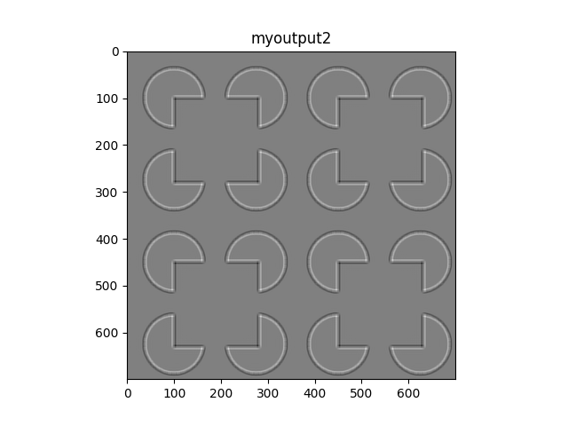
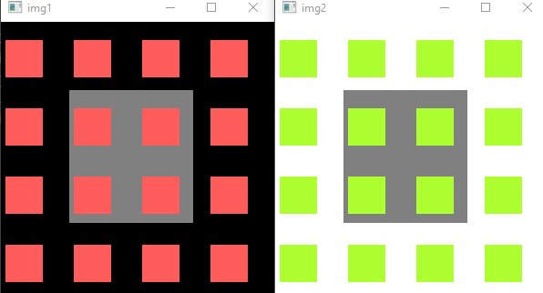

explanations
This page is trying to explain all optical illusions
First, let's import the package. I usally import the package like this:
from sorceress import sorceress
1- sorceress.chromatic
Chromatic adaptation is probably one of the central concepts in color vision. Chromatic adaptation is decreased sensitivity to a particular color as a result of prolonged exposure to a colored stimulus. The chromatic adaptation transforms were mainly studied with von Kries, Bradford, Sharp, and CMCCAT2000. However, CMCCAT2000 performed best. You can apply this function to any image and function automatically processes the image and returns a gif file. The gif file shows the transformation of the image from the original to the adapted image.
simple example via a gif:
focus on the red dot (10 second)

2- sorceress.dotill()

Lateral inhibition is the phenomenon in which a neuron's response to a stimulus is inhibited by the excitation of a neighboring neuron (Bakshi and Ghosh, 2017).Neurons that are firing inhibit the stimulation of surrounding. Accordingly, only the neurons that are most stimulated and least inhibited respond (Cohen, 2011).
It's an old-fashioned illusion that is probably known the most. I've added many parameters to this function to reproduce in distinctive ways.
dotill(hsize,wsize,hlinefreq=12,wlinefreq=12,dotcolor=(0,255,0),dotradius=5,horizontalcolor=(14, 75, 3),verticalcolor=(14, 75, 3),horizontalthickness=4,verticalthickness=4,verticallines=True,horizontallines=True):
example usage:
sorceress.dotill(500,500)
3- sorceress.realtimegrid()
sorceress.realtimegrid(realcolours=True)
perceive black and white real time (with webcam) frames as colorful. It's a real time version of sorceress.colorgrids() function.
with realcolours=False code will not calculate the real colors of your frame. I recommend you to use this function with real colors. Illusion is getting powerful if colors of lines separate each other, however, with realcolours=False means a lot of options are needed in the slide bar and it's not a pleasant view. It is an indicator of how flexible the color perception in the human visual system is.
Inspiration:
4- sorceress.addlines
inspired from prof Akiyoshi Kitaoka.
Have you seen this illusion before? In the below, someone is hiding after those grids. Beneath these grids there is more than Grids. Beneath these grids there is an idea. And ideas are bulletproof...
You can see the Vendetta guy if you scroll down and up the page or zoom out the whole image. Or more accurately, apply a Gaussian.

sorceress.addlines(img,outputname,linecolour1=(0,255,0),linecolour2=(0,255,255),linecolour3=(255,0,0))
This function basically adds vertical lines to an image, but it's blending not overlaying!
img your input image like "morgo.jpg"
outputname desired output like desired
linecolour1 linecolour2 and linecolour3 are point the colors of lines.
example usage:
sorcerer.addlines("vfor.jpg","mygrids",linecolour1=(150,5,5),linecolour2=(10,155,20),linecolour3=(0,15,15),alphablending==False)
If you select alphablending==True line colors are much more stable against the luminance change in the background image. It's because in OpenCV when you overlay two images or colors the function called addWeighted mixes the colors in very "small tones" but you probably do not even notice. Still, this function which I called alpha blending, is much more stable to luminance change. Use both, in the same way, and see what differs.
5- sorceress.eyecolour
sorceress.eyecolour("yourimage.jpg")
With this illusion, you perceive the black-and-white NumPy array as colorful. After you run this code, you need to select the iris manually and then push the enter. I didn't want to use the iris detector since it slowed down the script. Just select smaller as much as possible. I've used seamlessClone function from OpenCV for getting much more realistic results. Your ROI (region of interest that you selected manually) will correspond to an eclipse' coordinates which I needed to detect the exact position of the iris.
example: You probably have seen this lady's left eye as blue, but it's exactly the same color as the right eye.

6- sorceress.dakinPexc
sorceress.dakinPex(outputname="myoutput",dimension=800)

If you see the different tones of gray this illusion is successful. If you perceive all same, try with the big dimensions.
I've written this illusion after the read a paper from (Dakin and Bex, 2003). The existence of spatial frequency channels in the visual system is implicated in lightness perception. And I also should note that It has long been known that the brightness of a region of visual space is not related only to that region’s luminance, but depends also upon the luminances of adjacent regions (Von Bekesy, 1968).
7- sorceress.bruno
bruno(outputname,circle=False,polycolor=(0, 255, 255), rectcolor=(255, 255, 0), circColor=(0, 0, 255))
sorceress.sorcerer.bruno("myimagee",polycolor=(0,0,255),rectcolor=(34,34,128))

Well at first time it seems a little bit confusing but in their experiments, Bruno et al. (1997) have shown their participants first the shapes that you've seen on the left then the shapes on the right have shown. In this experiment, participants needed to decide quickly as much as possible whether is it the same or not with the previous shape that they had shown. Results have shown that participants were fast and found it easy to say that the two shapes were the same in the top situation. But they were very slow in the other scenario (It's still the same!).
8- sorceress.dolboeuf
dolboeuf(outputname,circleColor=(0,0,255),kill=False)
sorceress.dolboeuf("doloeufout",kill=False)

Which red circle is bigger than the other? Probably you know what I'm talking about, two of them in the same radius. This illusion was first created by Belgian psychologist Joseph Remi Leopold Delbœuf in 1865. It's all about the perception of size. Of course, it's not the "all" about the story, the size differences of the inner and outer circles also play their roles in this illusion... Well, I didn't create a parameter for customizing those circles' (inner and outer) radius but I believe you get the point. If you select the kill=True, the illusion will be destroyed by the two horizontal lines.
9- sorceress.kanizsa
kanizsa(outputname,dims,circleColor=(0,0,255))
sorceress.kanizsa("12outkaniza",400,circleColor=(34,34,178))

The Kanizsa illusion is probably one of the most known it was created by an Italian psychologist Gaetano Kanizsa (1913–1993). We can see surfaces, in this example squares (even though there are different kinds of Kanizas), with contours that are not present in the image. It is called illusory contours you can call this illusion also the "subjective contours" (Kanizsa, 1976). The first time I heard the name "Kanizsa" I thought he is Japanese for a long time. Then I learned that Kaniza was actually an Italian! It's because his name is used in many psychology textbooks to describe the Kanizsa triangle and most of those books don't give the full name of Kanizsa.
10- sorceress.ponzol
ponzol(outputname,kill=False,line1=(255,0,0),line2=(255,0,0),rectangle1=(0,0,255),rectangle2=(0,0,255))
sorceress.ponzol("test",kill=False,line1=(0,0,139),line2=(0,0,139),rectangle1=(0,69,255),rectangle2=(0,80,255))

The Ponzo illusion is old (Ponzo, 1912). But Ponzo actually published his illusion with a scientific paper. Actually, any image with a strong sense of perspective has this. You could see various methods if you search a little bit (especially in railways).
11- sorceress.tAki2001
tAki2001(outputname, dimension=700, circlecolour=(0, 255, 255), circleradius=15, bglinecolor=(255, 128, 128),bgcolor=(255, 255, 255))
#example usage:
sorceress.tAki2001("YelowRay",dimension=1200)

“Coloured ray illusion ” by Akiyoshi Kitaoka (Kitaoka, 2001). There were similar kinds of illusions that have been described by other scientists like Prandtl,(1927). Illusory yellow circles appear to run obliquely over the homogeneously white background. I added to function to change the background in the BGR array. Try it with other background colors with bgcolor parameter.
12-sorceress.cafewall
cafeWall(outputname, dimension=1200, resize=False, brickcolor=(255, 255, 255), bgcolor=(0, 0, 0))
#example:
sorceress.cafeWall("myimage",1200,resize=True,brickcolor=(0,0,128),bgcolor=(114,128,254))

This is maybe one of the most strong optical illusions that have ever been created. Bricks create a pattern in which the mortar lines between them do not look parallel. Why do we call it a "cafe wall"? well, a student of Richard Gregory from the University of Bristol has noticed this from a café (on St Michael’s Hill). The illusion is strongest when the mortar has a brightness that is in between that of the two tiles. So illusion will be work as long as colors have different brightness.
Why we are seeing this? Well, the only scientific explanation that I've known is from Gregory and Heard (1979). The role of orientation-sensitive simple cells in V1 and reactions to luminance borders are mainly involved in this illusion as they've mentioned. Gregory and Heard (1979) proposed that regions of varying luminances be retained in the spatial register by locking their borders. This border-locking technique causes inadvertent contour alterations between sections separated by small gaps. They've also shown that illusion disappears if the luminance of the middle line is noticeably lower or higher than the luminance of the two types of squares.
13-sorceress.ccob
ccob(self,image, rms=0.5, amplitudespectrum=300, plttitle='output')
#usage
sorceress.ccob("aki.jpg",rms=0.5,amplitudespectrum=300,plttitle="myoutput")

The signs with the letters R inside are the same color! This one is probably the most math-required optical illusion in this package. üòÑ First why do I call it "ccob" it stands for "Craik‚ÄìCornsweet‚ÄìO'Brien" and is commonly called as CCOB effect. The illusion is the same sorceress.sorcerer.dakinPexc(). This illusion is taken as evidence for a low‚Äìlevel ‚Äòfilling‚Äìin‚Äô mechanism subserving lightness perception. How do I create this illusion? Well, it's about the spatial frequency filtering with Fourier transform. And this illusion is mostly stimulus-oriented, so be sure your input image has some big luminance differences and does not have too much roughness. The function is converting your image to grayscale first then scaling to -1 +1. Then RMS which is the standard deviation of a measure of image contrast, also known as ‚Äúroot means square‚Äù, the contrast has been adjusting. The most important part is the amplitude spectrum. You can either apply a low or high pass filter it depends on your input image. Finally, to minimize coarse changes in luminance, the function applies a Laplacian-of-Gaussians (LoG) filter. If you look close enough to the edges of the domains you may see some "ringing". This is the result of the discrete Fourier transform.
The image that've shown image has been taken from the A. Kitaoka's twitter account. Here, I would like to show another example with another input image:
sorceress.ccob("kaniza.png",rms=0.2,amplitudespectrum=300,plttitle="myoutput2")

Above the color of the circles and the surface is the same. Try yourself with different amplitude spectrum and RMS values.
14-sorceress.ebbinghaus
ebbinghaus(output, bgcolor=(255, 255, 255), lcradius=22, rcradius=22, lcradius2=25, rcradius2=45)
sorceress.ebbinghaus("output",bgcolor=(0,255,255),lcradius=22,rcradius=22)

It looks simple, but the creating process of this illusion is about trigonometry üòÑ. The illusion called Ebbinghaus Illusion is similar to the Delb≈ìuf illusion. In both illusions, the size of an object is affected by the surrounding context. As you can see at the above bot circles has 22 radius. You also can change the outer circles' radius.
If you have psychology major like me you probably heard a lot the German psychologist Hermann Ebbinghaus, especially in the introduction courses. We know his popular work about the memory.
The illusion is widely replicated in psychology literature with different contexts (Aglioti et al, 1995; Lee and van Donkelaar, 2002; Culham et al, 2003). For example, In Aglioti's study, the direct comparison led to an approximately 50% increase of the illusion, which corresponds well to the difference found between perception and grasping. These researchers replaced the inner circular image with a tiny poker-chip-like token in their research. When asked to estimate the size of the target tokens, the subjects displayed the illusion throughout the trial, but when asked to manually pick up the central target token, the illusion had a considerably less impact on manual grip size during the grasping process. This was seen to indicate that the ventral system is influenced by the illusion and the dorsal system is not. The findings have been replicated by Haffenden and Goodale (1998).
15-sorceress.whiteill
whiteill(dimension=300, version2=False, rect1=(255, 255, 255), rect2=(0, 0, 0), bgrec1=(128, 128, 128),
bgrec2=(128, 128, 128), bg1=(0, 0, 0), bg2=(255, 255, 255), outputname="output"):
sorceress.whiteill(dimension=300,version2=False,rect1=(92,92,255),rect2=(47,255,173),outputname="whiteillout")

This is another strong illusion that has been described by White (1979). As you can see above, although the inner rectangles have in same gray ((128,128,128)) scale we perceive it in different contrast. It is hard to believe that two grey patches are the same when they look so different. You may also perceive the "lighter one" as larger but it's another part of the illusion which was described first by Galileo Galilei (1632) as the "irradiation effect". This function has also different various of this illusion you may call with the version2=True that shown like the bellow:
sorceress.whiteill(version2=True,outputname="whiteillout")

Do I need to say grays are the same? üòÑ. The scientific explanations are still debated in the literature at first look. A recent study about White's study (Betz et al (2015)) found that the illusion was marginally enhanced by contour adaptation at the test patch edges parallel to the grating. The contrasting behavior seen in the current investigation in response to independent manipulations of collinear or flanking bar luminance is consistent with these findings.
16-sorceress footsteps

Ok since this is not part of our python package I have not listed it as a function. You can access this illusion from here sorceress/footsteps:. I also added source codes of the js, you can find it under the "javascripts" folder.
The footsteps illusion is a motion illusion in which objects appear to move fast or slow even when they move at the same speed. With the link that I share with you above you can the speed and the adjusted colors in the same. In this version, I've added a small red rectangle in the middle. After you adjust colors in the same range (choose colors that have high contrast!) and slow down the animation speed focus to the middle rectangle now it looks like moving back and forth.
The key point of explanation of this illusion is the brightness differences. Between the moving objects and the background is important for the explanation of this illusion (Anstis, 2003).
17-sorceress thelilac
The Lilac chaser illusion is a visual illusion described by Jeremy L. Hinton in 2005 and was shown by Michael Bach on his website of the same year. For the best results, using a pinkish-violet color is a good choice, but other colors can also be used; in our animation, we'll use two different colors in two concentric rings. I also added a blur section which makes the stronger effect. You can access this illusion from here sorceress/thelilac:. I added various methods so you can use different combinations.

18-sorceress EyeMovements
sorceress/EyeMovements: This illusion is quite interesting actually, when I first saw this illusion I immediately thought of the footstep illusion. It works in very similar. You can read the whole Twitter thread for the comments of its original creators.twitter/Ben Balas:
I've customized this illusion with different conditions but I highly recommend the blur section. If you increase the blur of the screen the illusion is much stronger than you've realized.

20-sorceress Enigma
enigma(linecolors=(255,255,255), bgcolor=(1, 1, 1),circle1=(76, 0, 153),circle2=(102, 0, 204),centercircle=(0,255,255), outputname="enigma"): `
Fixation of the centre will result in the perception of rotatory motion in the circles.
This illusion based on the a paper from the Zeki et al (1993). In their paper, they have shown that human V5 which basically responsible for the perception of motion, even there is no real motion, can be active with such illusions. So they concluded that activity in a visual area devoted to visual motion might be expected to correlate with the perception of motion, even if there is no real motion. When the two colors of circles are equiluminant and the only clues to the existence of moving stripes are color differences, the perception of motion is greatly diminished. These alterations are linked to V5 activity. And I also would like to remind you that the illusion may not work for everyone, there are individual differences.
21-sorcerer.blackhole

sorceress.blackhole(outputname="blackhole",height=800, width=800, circle_size=10, circle_color=(0, 0, 0),kill=False)
This is a recent optical illusion that was described by Laeng et al (2022). According to the paper, the change rates of pupil diameters were significantly related to the illusory motion phenomenology only with the black holes. You can try it with the other colors though.
22-sorcerer.colorgrids
If you look closely enough you will see the original image is black and white. However, via colorful stripes your brain into seeing a color image. Basically, our brain is trying to fill the gaps between the stripes and it gives us an overall impression of what's there. Basically, you can call the function like this:
sorceress.colorgrids("inputfolder/test.jpg","grids",frequency=24)
23-sorcerer.Motion
It's a very interesting illusion. I've seen it in a paper that was recently published (Brenner & Smeets, 2022) According to this paper when two dots move clockwise or counterclockwise along the circular path, the one dots clearly moves faster than the other one. However, they are at the same speed. I added different conditions to reproduce this illusion in different ways. You can access this illusion from here sorceress/Motion:
REFERENCES
Aglioti S, DeSouza JFX, Goodale MA (1995) Size-contrast illusions deceive the eye but not the hand. Curr Biol 5:679–685
Anstis S. Moving objects appear to slow down at low contrasts. Neural Netw. 2003 Jun-Jul;16(5-6):933-8. doi: 10.1016/S0893-6080(03)00111-4. PMID: 12850053.
Bakshi, A., & Ghosh, K. (2017). A Neural Model of Attention and Feedback for Computing Perceived Brightness in Vision. Handbook of Neural Computation, 487–513. doi:10.1016/b978-0-12-811318-9.00026-0
Brenner, E., & Smeets, J. Spatial Vision for Action. Oxford Research Encyclopedia of Psychology. Retrieved 18 Oct. 2022, from https://oxfordre.com/psychology/view/10.1093/acrefore/9780190236557.001.0001/acrefore-9780190236557-e-842.
Bruno N, Bertamini M, Domini F (1997) Amodal completion of partly occluded surfaces: Is there a mosaic stage. J Exp Psychol Hum Percept Perform 23:1412–1426
Cohen R.A. (2011) Lateral Inhibition. In: Kreutzer J.S., DeLuca J., Caplan B. (eds) Encyclopedia of Clinical Neuropsychology. Springer, New York, NY. https://doi.org/10.1007/978-0-387-79948-3_1379
Culham, J.C., Danckert, S.L., Souza, J.F.X.D. et al. Visually guided grasping produces fMRI activation in dorsal but not ventral stream brain areas. Exp Brain Res 153, 180–189 (2003). https://doi.org/10.1007/s00221-003-1591-5
Dakin S. C. and Bex P. J. 2003 Natural image statistics mediate brightness ‘filling in’Proc. R. Soc. Lond. B.270**2341–2348 http://doi.org/10.1098/rspb.2003.2528
Gregory RL, Heard P (1979) Border locking and the café wall illusion. Perception 8(4):365–380
Haffenden, A. M. & Goodale, M. A. (1998) The effect of pictorial illusion on prehension and perception. Journal of Cognitive Neuroscience 10(1):122–36
Kanizsa G (1976) Subjective contours. Sci Am 234:48–52
Kitaoka, A. (2001).　Illusion designology (7): Illusory light perception that cannot be explained by the Fourier analysis. Nikkei Science, 31 (8), 66-68 (in Japanese).
Laeng B, Nabil S and Kitaoka A (2022) The Eye Pupil Adjusts to Illusorily Expanding Holes. Front. Hum. Neurosci. 16:877249. doi: 10.3389/fnhum.2022.877249
Lee, JH., van Donkelaar, P. Dorsal and ventral visual stream contributions to perception-action interactions during pointing. Exp Brain Res 143, 440–446 (2002). https://doi.org/10.1007/s00221-002-1011-2
Ponzo, M. (1911). "Intorno ad alcune illusioni nel campo delle sensazioni tattili sull'illusione di Aristotele e fenomeni analoghi".
Prandtl A (1927) Über gleichsinnige Induktion und die Lichtverteilung in gitterartigen Mustern [Onuniform induction and light distribution in lattice patterns]. Zeitschrift für Sinnesphysiologie58:263–307
Torsten Betz, Robert Shapley, Felix A. Wichmann, Marianne Maertens; Testing the role of luminance edges in White's illusion with contour adaptation. Journal of Vision 2015;15(11):14. doi:10.1167/15.11.14.
White M (1979) A new effect of pattern on perceived lightness. Perception 8:413–416
Von Bekesy G. (1968) Mach- and Hering-type inhibition invision. Vision Res. 8, 1483-1499.
Zeki S, Watson JD, Frackowiak RS. Going beyond the information given: the relation of illusory visual motion to brain activity. Proc Biol Sci. 1993 Jun 22;252(1335):215-22. doi: 10.1098/rspb.1993.0068. PMID: 8394582.